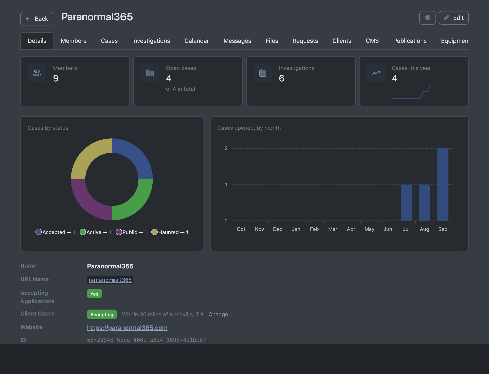
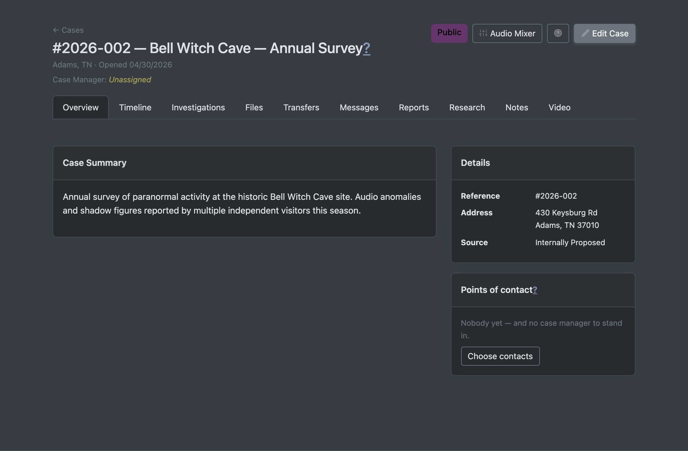
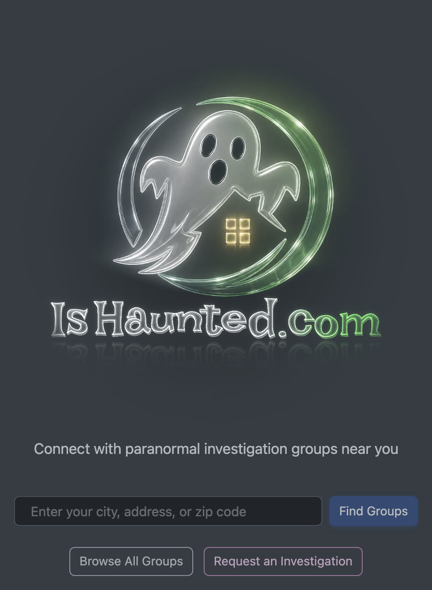
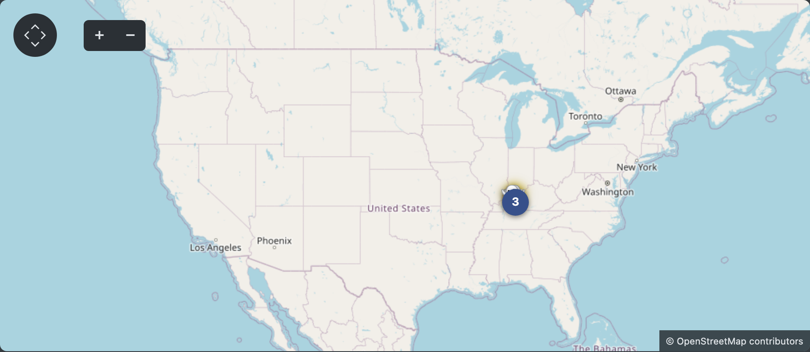
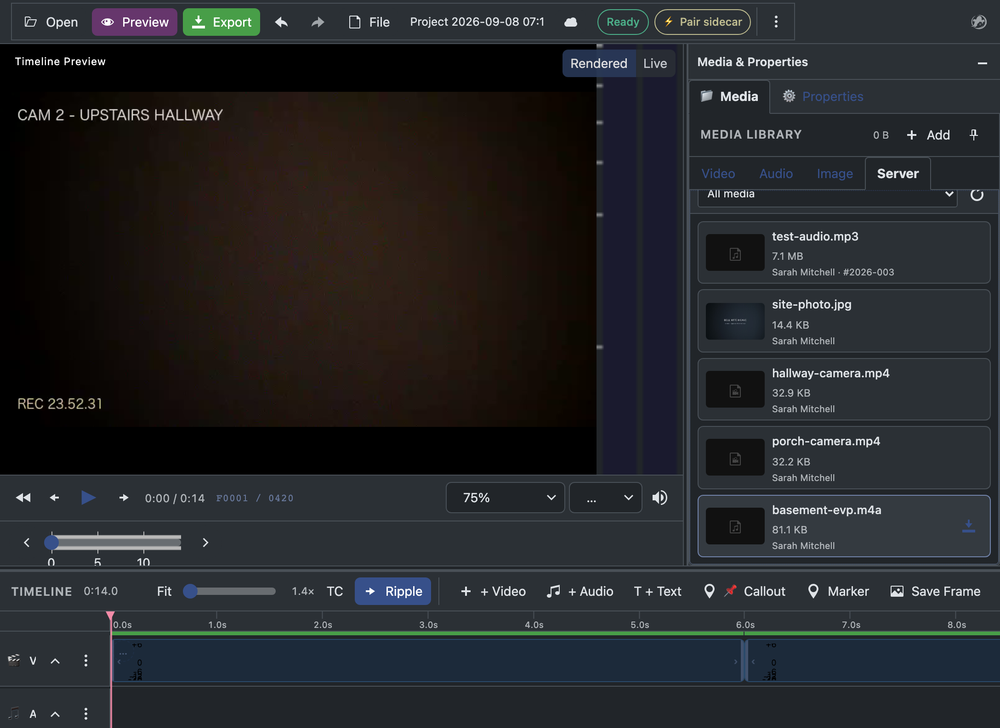
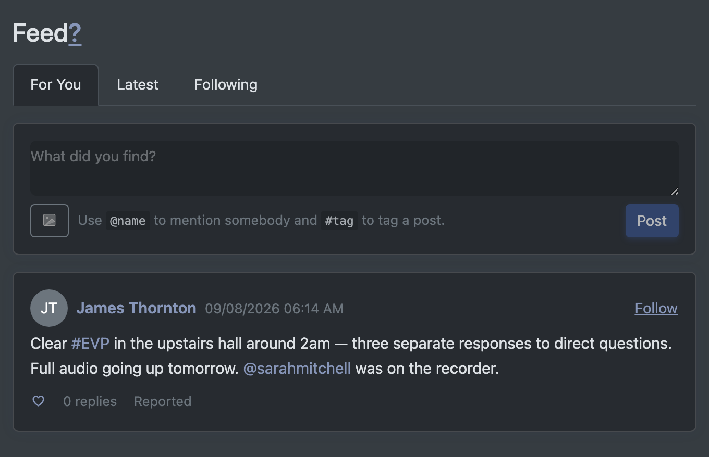
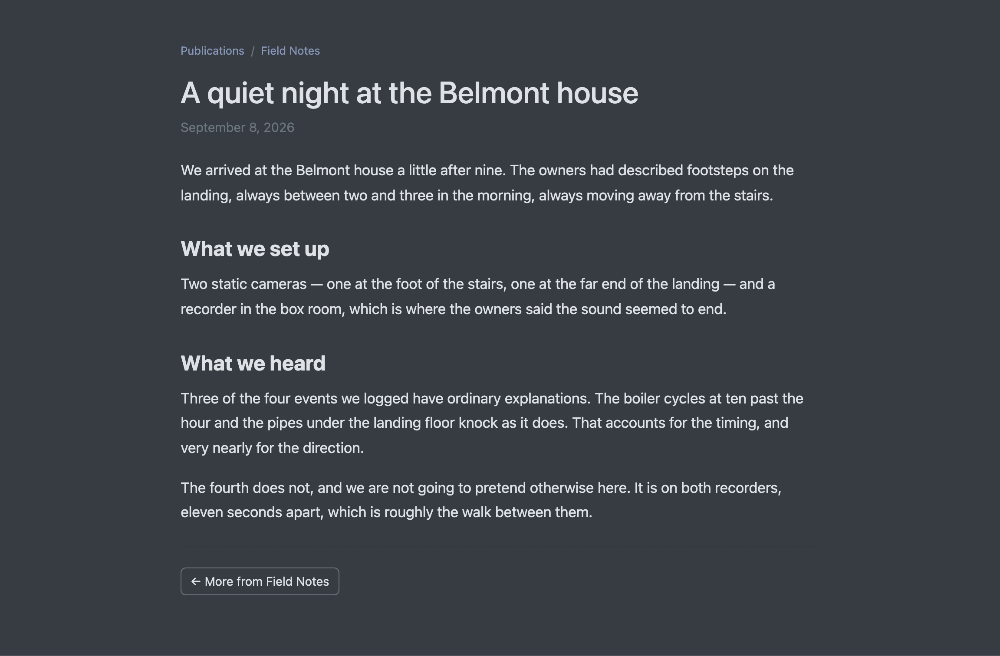
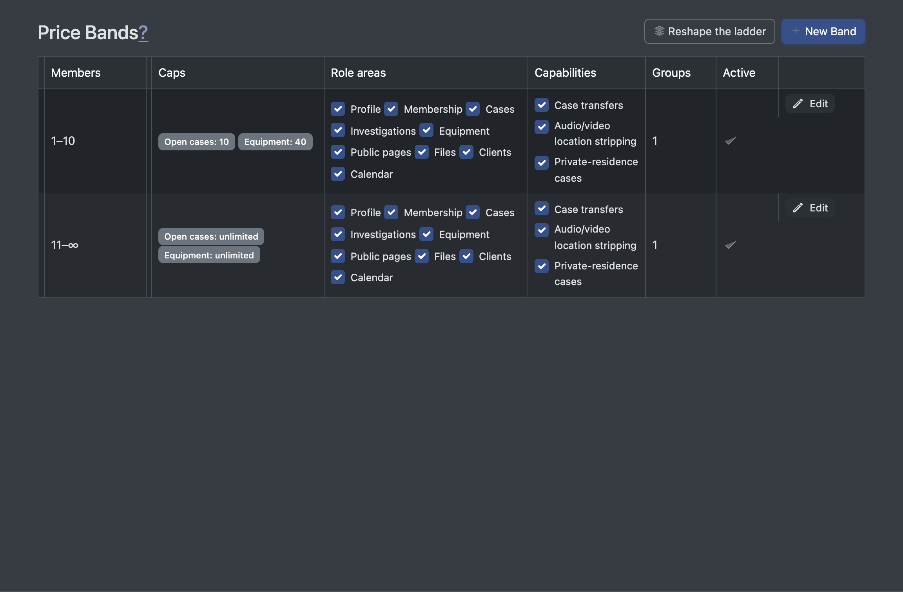

Every town has a haunted house, and every region has the people who investigate it. Thousands of volunteer paranormal investigation groups worldwide field requests from frightened homeowners, survey historic sites, and produce photo, audio and video evidence — and today they run all of it on spreadsheets, Facebook groups, and shared drives.
This is exactly the shape of market where vertical platforms win: recurring group activity, sensitive records that deserve real tooling, media-heavy evidence that deserves real processing, a public audience hungry for the findings, and clients — the families who ask for help — who currently get no professional experience at all. No incumbent owns this vertical. IsHaunted.com was built to own it end to end.
Client intake, case management, scheduled investigations, evidence files, team roles and permissions, equipment inventory and lending, calendars and public events, member recruitment, and each group's own public website — authored and published on the platform, no webmaster required. A group that adopts IsHaunted.com moves its whole working life here.


Published cases plotted on a world map, a directory of groups searchable by location, public events anyone can attend, long-form write-ups, and a social feed for the paranormal-curious. The public side is the content engine: every case a group publishes becomes a page that recruits the next group, the next member, and the next client.


Paranormal investigation runs on media, so the platform doesn't stop at storing files — it processes them. A browser-based video editor (multi-track timeline, overlays, callouts, keyframes, export) ships inside the product, with an optional native helper app that renders at full speed on the investigator's own machine. Server-side EVP detection scans audio evidence for anomalies automatically, behind an accuracy-gated test suite. Waveform players, spectrograms, clip extraction and multi-track case mixes round out the audio bench.

Nobody else in this vertical ships an editor, a detector, or a provenance trail. A group that cuts its evidence reel here has no reason to leave.
The community layer is live in the product today: member profiles, @handles, following, hashtags, and a moderated feed. The full front-door arc is now built and dark-launched — anyone can scroll without an account; posting means joining or founding a group; every photo and video is screened on our own servers before it appears; and groups' promoted cards ride the feed, served nearest the viewer first. One switch turns it on.


The platform is deployed at ishaunted.com. This is not a prototype and not a deck — it is a working product with production-grade engineering discipline:
The pricing principle: charge for the work that carries responsibility, never for the activity that grows the community.
| Free lane | Paid lane |
|---|---|
| Public-place investigations — landmarks, historic sites, businesses — including full public publication of findings. This is the content engine and the recruitment engine, and it stays free. | Private-residence and client work — taking a family's case, working it, and publishing redacted findings from it. The privacy machinery (pseudonyms, location generalization, media stripping, name detection) is the product being bought. |

Revenue levers, designed and largely built:
| Feature | What it is | Status |
|---|---|---|
| The feed, as the front door | An addictive, scrolling social feed for the paranormal-interested — anyone can scroll; posting and participation require joining or founding a group, making the feed itself the recruitment funnel. Group ads served by viewer location, interleaved with prompts to start your own group. | Built and dark-launched: the full arc — anonymous scroll, For You ranking, photo and video posts with automatic on-server safety screening, experience-type categories with a learning classifier, video-editor renders posting straight to the feed with recorded consent, group attribution, and geo-fed promoted cards with counted click-throughs — ships behind one switch, ready to turn on. |
| Private-case privacy, end to end | Write reports using real names freely; the platform substitutes pseudonyms and neutral labels ("the family", "the homeowner") on every public surface automatically, and lapsed subscriptions safely unpublish rather than expose. The core of the paid lane. | In active development now — data model and designation shipped; display-time redaction, plan gates, and lifecycle handling in progress. |
| Payments integration | Card processing for subscriptions and overflow seats on top of the existing billing domain (tiers, contracts, ledger, receipts, tax are already built and tested — the processor plugs into a finished frame). | Designed; the manual billing path runs today. |
| iPhone & iPad app | Native Swift app — one universal build for both devices — for investigators in the field: capture, upload, and the feed on the device they already carry on every investigation. Talks to the same API as the website, so it is the same account and the same data, with the same privacy rules enforced identically. | Running on device, and feature-complete for its first phase. Sign-in with two-step codes, the full feed with camera capture, notifications, cases and their timelines — including logging what happened, with photos, from the scene — investigations with a map of where you've been, and public events with RSVP and add-to-calendar all work against the live API today, as does Sign in with Apple — the server validates Apple's token and links it to an existing account by verified email rather than creating a duplicate. Enrolment in the Apple Developer Program is the remaining step before submission. |
| Ghost walking tours | Tour operators are a second kind of business on the same platform — public by default, with their tours listed and reservable, and a filter that lets a visitor in a strange city find them. Investigation groups that also run paid tours are found under both without registering twice. | Built. Widens the addressable market beyond investigation groups at essentially no additional platform cost. |
| Group white-label | Custom domains and branding for a group's public site — a high-perceived-value premium tier on machinery (per-group CMS) that already exists. | On the priced-lever roadmap. |
Everything pictured in this document was designed and built by a single founder using an AI-accelerated development process, with the test discipline and decision records to prove it — 180+ tracked items designed, built, tested, documented and closed, at a pace of multiple production-quality features per day. That is not a story about effort; it is a structural cost advantage. The same process now compounds: each new capability lands on tested foundations with its documentation and its tests in the same change.
IsHaunted.com is deployed, differentiated, and priced on a principle that grows the community while charging for genuine value. The near-term roadmap — the engagement feed, payments, and the mobile app — is where investment converts directly into reach and revenue. I'd welcome the chance to walk through the product live; everything shown here is a login away.
Ben Clark
ben.clark@vanderbilt.edu · ishaunted.com